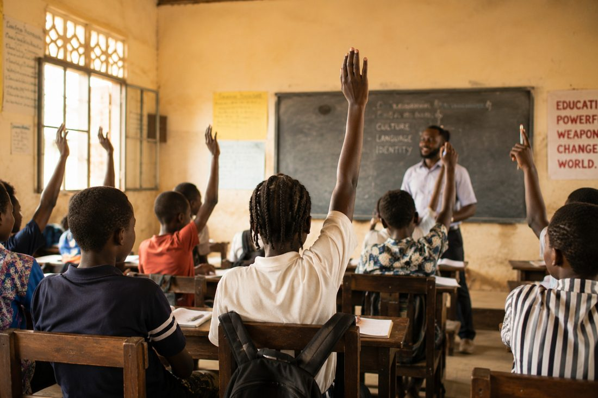
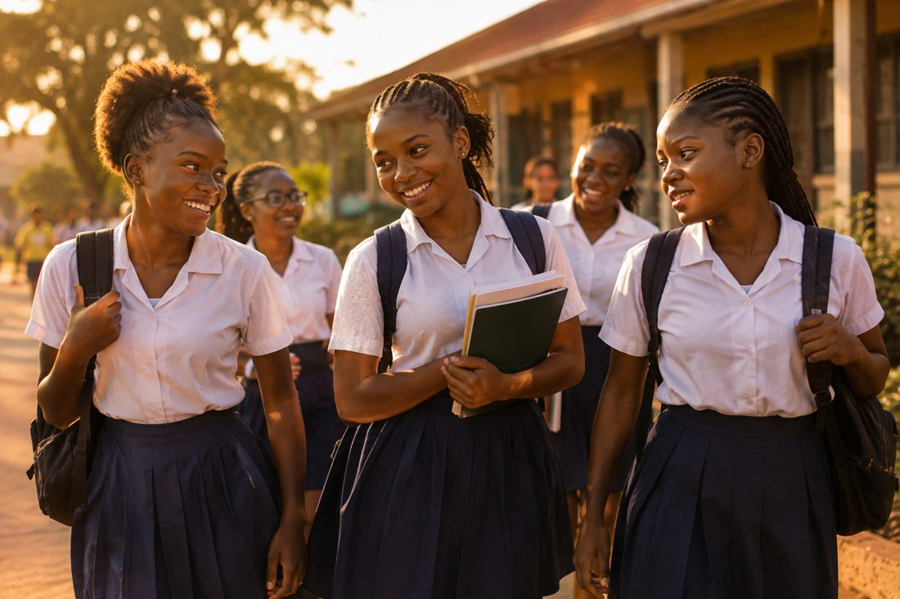

Bright Path started with a simple frustration: most education charities ask you to trust that your money reaches someone. We built the opposite — you fund a specific girl's school year, and you hear from her.

When a donor sponsors a specific girl, two things happen: she gets consistent support for a full school year instead of a one-time gift, and the donor stays connected instead of forgetting they gave. That connection is what keeps girls sponsored term after term, not just once.
Bright Path was founded by a small team of former teachers in Lagos who noticed the same pattern year after year: girls doing well in primary school, then vanishing from the roll by age 13 or 14 — not from a lack of ability, but from a lack of ₦45,000 a term. We built Bright Path to close that specific, fixable gap.

"I sponsor Blessing. I get a note from her every term. It's the first charity where I've actually felt connected to who I'm helping."
— Folake A., donor"Being a mentor taught me as much as it taught the girls. You watch someone's confidence change over a year."
— David O., volunteer mentor"My daughter is the first in our family to finish secondary school. I don't have words for what this meant."
— Mrs. Adeyemi, parent